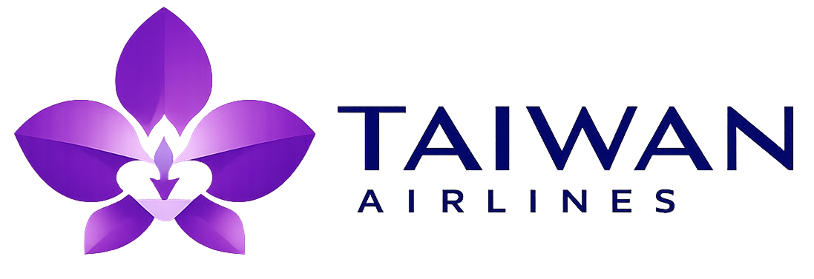

TAIWAN AIRLINES · 台灣航空
把窗外的風景
變成你的下一個故事
Boeing 747 · Jumbo Jet
London Calling
每週 14 班直飛，13 小時抵達
穿過雲層
距離只剩期待
限時促銷 · 即日起至 6/30
台北 TPE ⇄ 倫敦 LHR
NT$28,800
起 / 來回未稅
出發日：2026/09–11 ｜ 經濟艙｜ 含 30kg 行李
立即訂位 →
座位有限，售完為止。實際票價以結帳頁面為準。

SCROLL ↓
此為概念作品，非真實航空公司或航班資訊。 ｜ Boeing 747 by
Miha Lunar
· Poly Pizza · CC-BY 3.0 ｜ 空拍照片
Pexels
台北 → 倫敦
倫敦 → 台北